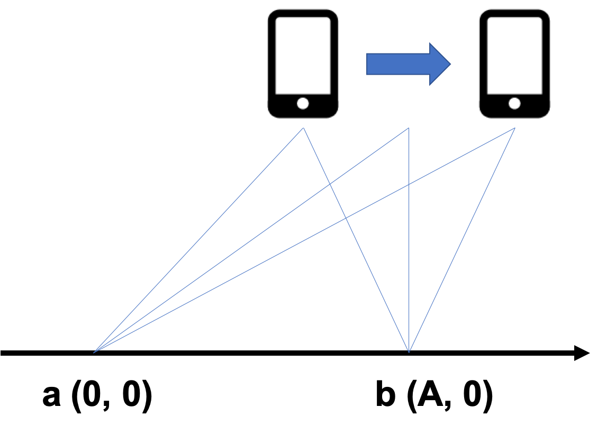
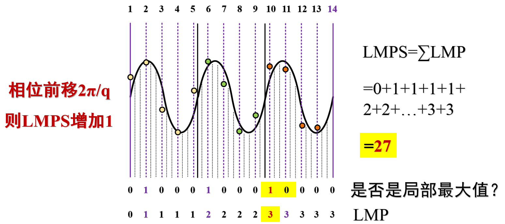

追踪技术¶
基于距离变化量的位置追踪，是利用目标移动引起的到信标的距离变化实现的追踪方法。不同于基于距离测量的定位方法，基于距离变化的追踪方法一般不直接测量距离变化，而是通过距离变化导致的信号频率、相位等信息的变化来间接测量的。常见的基于距离变化量的位置追踪方法有：基于多普勒效应的追踪方法、基于FMCW的追踪方法、基于相位变化的追踪方法。
1. 基于多普勒效应的追踪方法¶
1.1. 多普勒效应¶
多普勒效应是指接收信号的频率或者波长因为信号源和观测者的相对运动而产生变化。

1.2. 多普勒追踪实现¶
根据多普勒效应，我们可以测量一个移动的目标的速度。 以声音信号为例，假设声源持续地发送声音信号，持有移动设备的接收者处于移动状态。 如上图所示，当用户远离或者接近声源时，由于多普勒效应，接收到的声音信号频率将发生变化。 若接收者远离声源，接收的声音信号频率将减小； 若接收者接近声源，接收的声音信号频率将增加，因此可以计算接收者相对声源的运动速度v为： $$ v = \frac{\Delta F}{F_0}c $$
式中F_0表示原始的信号频率，\Delta F表示由于多普勒效应产生的频率变化，c表示空气中的声速。 由于速度对时间的积分等于位移，因此通过计算出速度并进行积分，我们就可以得到目标设备运动的距离。在目标初始位置我们已经知道的情况下，可以计算得目标的最终位置，从而实现对目标的定位追踪。
接收者一段时间的运动距离可以计算为d = \int_0^{T} v dt。 因此，给定初始位置的情况下，可以对移动设备进行追踪。 基于多普勒效应的追踪系统核心步骤在于计算频率的偏移\Delta F。 一般来说，得到\Delta F的方法是将接收到的声音信号做短时离散傅里叶变换（STFT）。 这样一来我们就能得到该信号的时频图。 如果原始信号的频率是固定的，那么通过计算原始信号频率和在某一时刻接收到的信号频率的差，就能得到频率偏移\Delta F。 STFT是一种基于滑动窗口的傅立叶变换方法，它的原理是一个滑动窗口在原信号上移动，对每个窗口内的信号做傅立叶变换，这样就可以得到该窗口时间范围内，信号的频域信息和频率偏移。 假设窗口的长度是L_w，采样率为F_s, 那么频率精度D_F就可以用如下公式计算得出:
如果我们知道了原始信号的频率F_0和声速c，我们就可以计算出这种方法在速度上的精度。
一般来说，越短的窗口在时域上效果越好，而在频域上效果较差。 长窗口频域上效果好，但是时域上效果差（时延比较高）。
有很多基于多普勒效应进行测距和定位的系统 ： The Magic Carpet能够利用多普勒雷达来监测使用者在一块“魔毯”上的运动。 AAMouse 实现了对手机的实时定位追踪。 通过使用AAMouse，用户可以将手机当成空间鼠标来使用。 它的原理是通过计算接收到的声音信号的频率偏移，根据多普勒效应计算出移动速度，再通过积分算出移动距离。 在初始点已知的情况下，AAMouse可以对手机进行实时的定位和追踪。 Swadloon 能够测量手机相对于声源的方向和位置。 它需要持续发出恒定频率声音信号的声源。 用户需要以一个恒定的速度将手机在一个很小的范围内移动（通常是用户用手去移动这个手机）。 同时Swadloon还假定用户以一个固定的模式去移动手机（比如沿着一个矩形移动），通过计算频率偏移，就能得出手机相对于声源的位置。
2. 基于FMCW的追踪方法¶
2.1. CAT 原理¶
本节主要介绍论文CAT: high-precision acoustic motion tracking中的相关工作内容。
基于FMCW信号的追踪方法，其核心理论是利用FMCW信号频率和时间的关系，通过傅里叶变换计算接收信号的频率，再利用频率计算信号的传播时间的变化，从而计算目标的移动情况。 基于FMCW信号进行追踪的原理与FMCW测距相同，只是在追踪的应用中我们不要求收发设备进行精确同步，具体细节可参见FMCW测距一章。
追踪和定位的一个核心区别在于，追踪的结果通常是目标设备的运动信息，需要结合目标设备的初始位置，才能计算出设备实时的位置信息。 那么如何获取目标的初始位置呢？ 常用的办法是要求设备进行一系列指定的运动，并根据追踪结果，结合已知的几何关系进行计算。
CAT采用的方法如下：首先，我们在定位空间中布置两个扬声器a和b，两个扬声器的坐标分别为a(0, 0)和b（A, 0）。

当用户手持手机沿着平行于x轴的方向移动时，当手机的横坐标小于A时，手机接收到的扬声器a的信号的多普勒效应显示手机是远离a的，扬声器b的信号的多普勒效应显示手机是接近b的。 当手机的横坐标大于A时，手机接收到的扬声器a和b的信号的多普勒效应均显示手机是远离扬声器的。 两种现象的转折点即为手机所处位置横坐标为A的时刻t。 那么，我们就可以根据该时刻手机与两扬声器的几何关系计算手机在该时刻t的位置。根据计算出的TDOA信息\Delta D，以及手机、扬声器a和b构成的直角三角形的几何关系，我们可以得到以下方程： $$ \begin{cases} D_a-D_b=\Delta D \ D_a2-D_b2=A^2 \end{cases} $$
求解该方程，我们就可以获得时刻t手机与两个扬声器a和b的距离D_a和D_b。
当定位空间中存在多个扬声器时，我们可以利用该原理计算一个最优位置。假设空间中存在三个扬声器，其坐标分别为(x_1, y_1)、(x_2, y_2)、(x_3, y_3)，时刻t手机的坐标为(x, y)，手机到三个扬声器的距离分别为D_1, D_2, D_3，TDOA分别为\Delta D_{12}, \Delta D_{23}, \Delta D_{13}。那么，假设代价函数F为：
可以使用梯度下降法求解代价函数F取最小值时的x和y的值。当代价函数F取最小值时，(x, y)即为该条件下手机的最优位置。
2.2. FMCW追踪声音实现¶
实验场景
一个手机A发送时长约7s的声音信号，另一个手机B做远离手机A的直线运动并录下声音存储为fmcw_receive.wav。
发送声音信号的格式为88个chirp信号，每两个chirp信号之间有与chirp信号等长的空白间隔。 chirp频率自18kHz线性增加到20.5kHz，持续时间40ms。 采样率为48kHz。
由于我们的收发机之间没有同步（没有用反射信号），因此通过FMCW得到的不是绝对距离。 但通过计算出的“绝对距离”，我们可以得到手机B相对于A的距离变化。
代码实现
首先我们要检测信号的起始位置，通过correlation可以得到大致位置。 因为我们在此不要求精准同步，一个粗糙的起始位置已能满足需求。 根据起始位置start，我们可构造一个pseudo-transmitted信号，该信号由相同的chirp和空白间隔组成。 将pseudo-transmitted信号和接收信号相乘并逐chirp做傅里叶变换，我们可以得到峰值对应的\Delta f序列。 通过FMCW频率差公式即可推出距离。
注意我们的声音实现中没有采用发射信号，因此距离d为：
其中c为声速，T为chirp周期，B为chirp扫频带宽。
1 2 3 4 5 6 7 8 9 10 11 12 13 14 15 16 17 18 19 20 21 22 23 24 25 26 27 28 29 30 31 32 33 34 35 36 37 38 39 40 41 42 43 44 45 46 47 48 49 50 51 52 53 54 55 56 57 58 59 60 | %% 发送信号生成 fs = 48000; T = 0.04; f0 = 18000; % start freq f1 = 20500; % end freq t = 0:1/fs:T; data = chirp(t, f0, T, f1, 'linear'); output = []; for i = 1:88 output = [output, data, zeros(1,1921)]; end %% 接收信号读取，并滤波 [mydata,fs] = audioread('fmcw_receive.wav'); mydata = mydata(:,1); hd = design(fdesign.bandpass('N,F3dB1,F3dB2',6,17000,23000,fs),'butter'); mydata = filter(hd,mydata); figure; plot(mydata); %% 生成pseudo-transmitted信号 pseudo_T = []; for i = 1:88 pseudo_T = [pseudo_T,data,zeros(1,T*fs+1)]; end % fmcw信号的起始位置在start处 % 若start有偏差会造成什么影响？ start = 38750; pseudo_T = [zeros(1,start),pseudo_T]; [n,~] = size(mydata); [~,m] = size(pseudo_T); pseudo_T = [pseudo_T,zeros(1,n-m)]; s = pseudo_T.*mydata'; len = (T*fs+1)*2; % chirp信号及其后空白的长度之和 % 做快速傅里叶变换时补零的长度。 % 在数据后补零可以使的采样点增多，频率分辨率提高。 % 可以自行尝试不同的补零长度对于计算结果的影响。 fftlen = 1024*64; %% 计算每个chirp信号所对应的频率偏移 idxs = zeros(88, 1); for i = start:len:start+len*87 FFT_out = abs(fft(s(i:i+len/2),fftlen)); [~, idx] = max(abs(FFT_out(1:round(fftlen/2)))); idxs(round((i-start)/len)+1) = idx; end %% 依据频率差公式计算出距离 start_idx = 0; delta_distance = (idxs-start_idx)*fs/fftlen*340*T/(f1-f0); %% 画出距离的变化 figure; plot((0:87)*2*T, delta_distance); xlabel('time (s)', 'FontSize', 18); ylabel('distance (m)', 'FontSize', 18); |
我们可以看到，手机B先是移动了约40cm，停了1秒钟后又移动了约30cm。
3. 基于信号相位变化的追踪方法¶
3.1. LLAP (Low-Latency Acoustic Phase)¶
代码基于论文Mobicom16“Device-Free Gesture Tracking Using Acoustic Signals"实现
参考代码：https://github.com/Samsonsjarkal/LLAP/blob/master/llap/Control/RangeFinder.cpp
论文方法介绍
论文采用含有多个频率成分的声波进行追踪，通过分析反射信号的相位推算被追踪物体的位移，具体流程如下：
- 生成多频率信号。为了尽量减少声波对人耳的影响，声波的频率成分应尽可能在人耳的听力范围之外，或者边界上。论文中采用的声波频率在17kHz以上。生成多频率信号而不是单一频率信号的原因是：对多频率信号的每个单一频率进行分析，可以在之后采用线性回归的方式消除动态多径效应中每条多径距离变化不一致的问题。
- 对收到的反射信号进行解调和滤波。在反射信号的频率成分中，既包含发射信号的频率，也包含由于被追踪物体运动而产生的多普勒频移。为了将多普勒频移分离出来，论文采用I/Q解调的方式。在I/Q解调的过程中，论文采用CIC (Cascaded Integrator Comb，级联积分梳) 滤波器对信号进行分块滤波，CIC滤波器本质上是一个使用矩形窗口进行滑动平均的滤波器，在代码中实现为CIC_Filter函数。
- 分离信号中的静态分量和动态分量。由于周围的静态环境或一定时间内相对静态的环境，反射信号中会体现出由于静态多径效应产生的分量，和运动物体产生的动态分量相对应。论文中采用LEVD（Local Extreme Value Detection，局部极值检测）算法提取静态分量，再从原信号中减去静态分量来获取动态分量。
- 线性回归计算一小段时间内的物体位移。提取出信号的动态分量后，便可计算动态分量的相位，为利用相位的变化计算位移。多径效应的影响导致仅依赖于一个频率的信号计算出来的结果很有可能误差很大，而多个频率分别计算可以对误差较大的点进行修正。
3.2. Vernier¶
本节主要介绍了论文Vernier: Accurate and Fast Acoustic Motion Tracking Using Mobile Devices中的相关工作内容。
基于信号相位变化的追踪方法，其关键在于如何计算接受信号的相位变化。经典的测定相位变化的方法，其对相位的计算精度受限于信号的采样率。而声音信号的采样率又受到硬件和软件的双重限制，例如常见的音频文件采样率为44.1kHz或48kHz，常见的手机麦克风录音的采样率不大于48kHz。因此，通常来说，很难通过提高信号采样率来提高定位精度。
如果可以通过其他方法提高信号相位变化的分辨率，即可在信号采样率固定不变的前提下，提高基于相位变化的追踪方法的精度。
游标卡尺的原理
首先，我们考虑一个类似的间接提高分辨率的例子：游标卡尺。游标卡尺是一种用于精确测量长度的工具。一般而言，游标卡尺由两部分构成，一部分是主尺，另一部分是可滑动的游标，可以在主尺上自由滑动。主尺和游标上都有刻度，但是二者的刻度间距稍有不同。主尺的刻度一般都是整毫米的，而游标上的刻度一般与主尺上的刻度往往有着一个微小的差距（如0.9mm）。

对于常见的游标卡尺，其主尺刻度间隔为1mm，游标上的刻度间隔为0.9mm。如果我们要测量的距离为r，那么我们可以得到：
其中，r’表示对r进行向下取整的结果，x表示游标的第多少个刻度，能够与主尺上的刻度互相对齐。经整理，得到：
由于游标每向右移动了一个刻度，其与主尺上的刻度上的差距就增加了0.1 mm。因此，利用这个原理就可以对长度进行更精确地测量。值得指出的是，游标卡尺的测量精度本质上并不是由游标和主尺上的刻度差值决定的，而是由二者的最大公约数决定的。
信号相位变化的测定
接下来，我们介绍一种类似游标卡尺原理的信号相位变化的测定方法。
首先定义几个变量：
LMP（Local Max Prefix）：在一个信号采样窗口中，我们规定第一个采样点的LMP为0。从第二个采样点开始，如果某一个点的值（就是该采样点的信号强度），既大于它的前一个值，又大于它的后一个值，那么这个点的LMP值为它的前一个点的LMP值加1，否则该点的LMP值等于其前一个点的LMP值。
LMPS（Local Max Prefix Sum）：LMPS是在一个窗口中，所有采样点的LMP的和。
假定在时间t1和时间t2两个时刻，录音设备取得两个等长时间窗口的音频数据w1和w2。每个窗口中有恰好有p个周期的声音信号，这p个周期的信号刚好对应着q个采样点。w1和w2两个时间窗口的数据的LMPS分别为L1和L2。则这两个窗口所经历的相位变化为 Δφ =（L2-L1）2π / q。位置变化为 \Delta d = \lambda \Delta \phi - c (t_2 - t_1)/2\pi，其中c是声音在空气中的传播速度。

如图所示，在一个时间窗口内，p = 3，q = 13。则该窗口内信号各采样点的LMP如图所示，信号的LMPS为26。

当信号相位变化 \frac{2\pi}{q} 时，LMPS增加1。 也就是说，当p = 3、q = 13时，每当LMPS增加1，我们就可以说，信号的相位变换增加了 \frac{2\pi}{13} ，距离变化了 \frac{\lambda}{13} 。
接下来，我们介绍该算法的实现。
首先，我们需要一个计算窗口信号的LMP和LMPS的函数。（代码见./code/getLMPS.m）
1 2 3 4 5 6 7 8 9 10 | function [ lmps ] = getLMPS( y ) %输入是窗口信号的强度，输出的该窗口信号的lmps lmp = 0; lmps = 0; for i=2:length(y)-1 %计算除首尾的采样点的lmp if y(i)>y(i-1) && y(i)>y(i+1) lmp = lmp + 1; end %如果该采样点是局部最大值，则lmp+1 lmps = lmps +lmp; %lmps是所有采样点的lmp的和 end lmps = lmps + lmp; %最后一个采样点的lmp一定与倒数第二个相同 |
该函数将计算某个窗口信号的LMPS值。然后通过比较信号的LMPS值的变化，我们就可以计算信号相位的变化情况。（代码见./code/vernier.m）
1 2 3 4 5 6 7 8 9 10 11 | pi = 3.14; %常量pi x1 = 0: 6*pi/13: 6*pi; %正弦信号的采样位置，p=3，q=13 y1 = sin(x1); %该正弦信号所有采样点的信号强度 d = 2*pi/13; %信号的相位偏移 x2 = d: 6*pi/13: 6*pi+d; %经过偏移的正弦信号的采样位置 y2 = sin(x2); %经过偏移的正弦信号的采样点的信号强度 lmps1 = getLMPS(y1) %计算原信号的lmps lmps2 = getLMPS(y2) %计算偏移信号的lmps |
运行结果如下：
1 2 3 4 | lmps1 = 26 lmps2 = 27 |
代码执行的结果与前面推导的一致。
如果信号的相位偏移量小于2π/q，那么结果如何？为了验证这点，我们修改代码中的信号偏移量：
1 | d = pi/13; %信号的相位偏移，该偏移小于2π/q |
则代码的运行结果如下：
1 2 3 4 | lmps1 = 26 lmps2 = 26 |
从运行结果可以看出，如果信号的相位偏移量小于2π/q，我们就无法通过该方法分辨出这个相位偏移量。这说明，理论上2\pi/q就是该方法的最小相位分辨率。
5. 参考文献¶
- J. Paradiso, C. Abler, K. Hsiao, and M. Reynolds. 1997. magic carpet: physical sensing for immersive environments. In Proceedings of ACM CHI.
- K. Kalgaonkar and B. Raj. 2009. One-handed gesture recognition using ultrasonic Doppler sonar. In Proceedings of IEEE Acoustics, Speech and Signal Processing
- S.P Tarzia, R.P. Dick, P.A Dinda, and G. Memik. 2009. Sonarbased measurement of user presence and attention. In Proceedings of ACM UbiComp.
- Sangki Yun, Yi-Chao Chen, and Lili Qiu. 2015. Turning a Mobile Device into a Mouse in the Air. In Proceedings of ACM MobiSys.
- Wenchao Huang, Yan Xiong, Xiang-Yang Li, Hao Lin, XuFei Mao, Panlong Yang, Yunhao Liu, and Xingfu Wang. 2015. Swadloon: Direction Finding and Indoor Localization Using Acoustic Signal by Shaking Smartphones. IEEE Transactions on Mobile Computing 14, 10 (2015), 2145-2157.
- Wei Wang, Alex X. Liu, and Ke Sun. 2016. Device-free Gesture Tracking Using Acoustic Signals. In Proceedings of ACM MOBICOM.